2026-05-16 Final Squad
Rebuilt from the KFA final squad article dated May 16, 2026.
Article: Son Heungmin included, with Lee Gihyuk and Lee Donggyeong as surprise additions.
Squad Table
Photo and player profile data come from KFA player pages. Club names follow the May 16 final squad article.
| Photo | Name | English Name | Position | Birth | Size | Club |
|---|---|---|---|---|---|---|
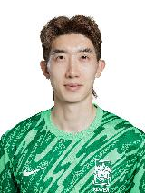 |
조현우 | JO Hyeonwoo | GK | 1991.09.25 | 189Cm / 75Kg | Ulsan HD |
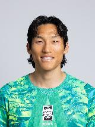 |
김승규 | KIM Seunggyu | GK | 1990.09.30 | 187Cm / 84Kg | FC Tokyo |
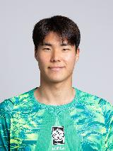 |
송범근 | SONG Bumkeun | GK | 1997.10.15 | 194Cm / 88Kg | Jeonbuk Hyundai |
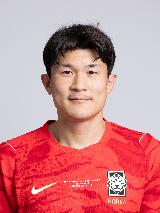 |
김민재 | KIM Minjae | DF | 1996.11.15 | 190Cm / 88Kg | Bayern Munich |
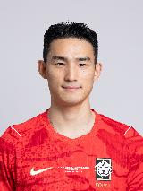 |
조유민 | CHO Yumin | DF | 1996.11.17 | 182Cm / 70Kg | Sharjah |
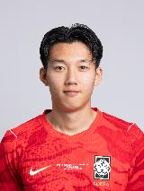 |
이한범 | LEE Hanbeom | DF | 2002.06.17 | 188Cm / 72Kg | Midtjylland |
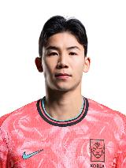 |
김태현 | KIM Taehyun | DF | 1996.12.19 | 175Cm / 71Kg | Kashima Antlers |
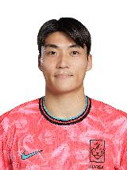 |
박진섭 | PARK Jinseob | DF | 1995.10.23 | 182Cm / 75Kg | Zhejiang FC |
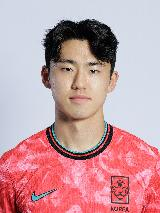 |
이기혁 | LEE Gihyuk | DF | 2000.07.07 | 184Cm / 72Kg | Gangwon FC |
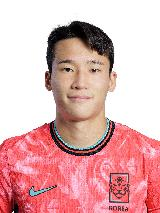 |
이태석 | LEE Taeseok | DF | 2002.07.28 | 174Cm / 61Kg | Austria Wien |
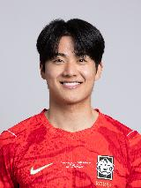 |
설영우 | SEOL Youngwoo | DF | 1998.12.05 | 180Cm / 72Kg | Zvezda |
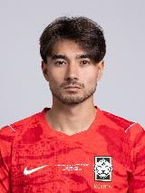 |
옌스 카스트로프 | CASTROP Jens | DF | 2003.07.29 | Cm / Kg | Monchengladbach |
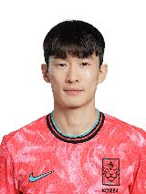 |
김문환 | KIM Moonhwan | DF | 1995.08.01 | 173Cm / 64Kg | Daejeon Hana |
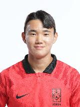 |
양현준 | YANG Hyun Jun | MF | 2002.05.25 | 179Cm / 73Kg | Celtic |
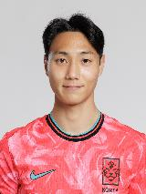 |
백승호 | PAIK Seung Ho | MF | 1997.03.17 | 182Cm / 72Kg | Birmingham City |
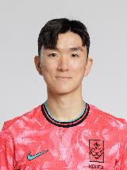 |
황인범 | HWANG Inbeom | MF | 1996.09.20 | 177Cm / 70Kg | Feyenoord |
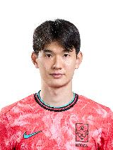 |
김진규 | KIM Jingyu | MF | 1997.02.24 | 177Cm / 68Kg | Jeonbuk Hyundai |
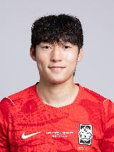 |
배준호 | BAE Junho | MF | 2003.08.21 | 180Cm / 70Kg | Stoke City |
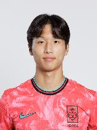 |
엄지성 | EOM Jisung | MF | 2002.05.09 | 174Cm / 64Kg | Swansea City |
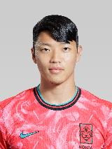 |
황희찬 | HWANG Heechan | MF | 1996.01.26 | 177Cm / 77Kg | Wolverhampton |
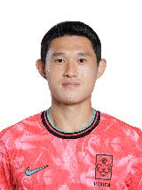 |
이동경 | LEE Donggyeong | MF | 1997.09.20 | 175Cm / 68Kg | Ulsan HD |
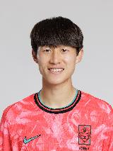 |
이재성 | LEE Jaesung | MF | 1992.08.10 | 180Cm / 70Kg | Mainz |
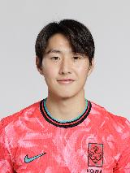 |
이강인 | LEE Kangin | MF | 2001.02.19 | 174Cm / 72Kg | Paris Saint-Germain |
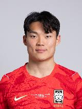 |
오현규 | OH Hyeongyu | FW | 2001.04.12 | 183Cm / 72Kg | Besiktas |
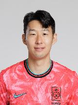 |
손흥민 | SON Heungmin | FW | 1992.07.08 | 183Cm / 78Kg | LA FC |
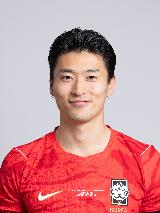 |
조규성 | CHO Guesung | FW | 1998.01.25 | 189Cm / 82Kg | Midtjylland |
Sources: https://www.kfa.or.kr/layer_popup/popup_live.php?act=news_tv_detail&idx=27972&div_code=news, https://www.kfa.or.kr/national/?act=nt_man